6025 vertices, 5421 polygons (5010 quads, 285 tris, 126 n-gons) watertight: yes (open edges: 0, non-manifold: 0) degenerate: 0 polygons, 40 slivers (< 5.0 deg)
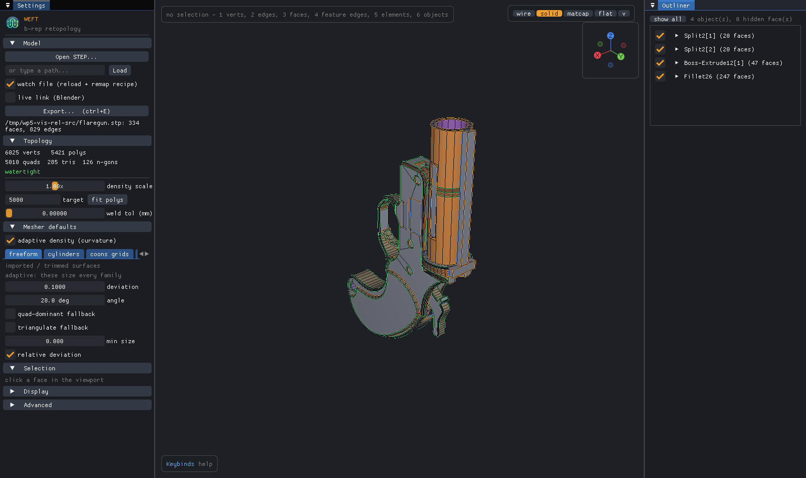
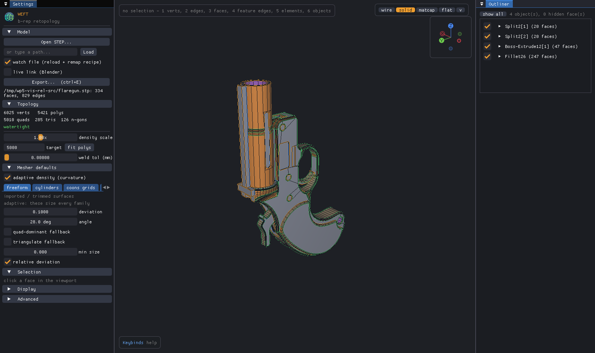
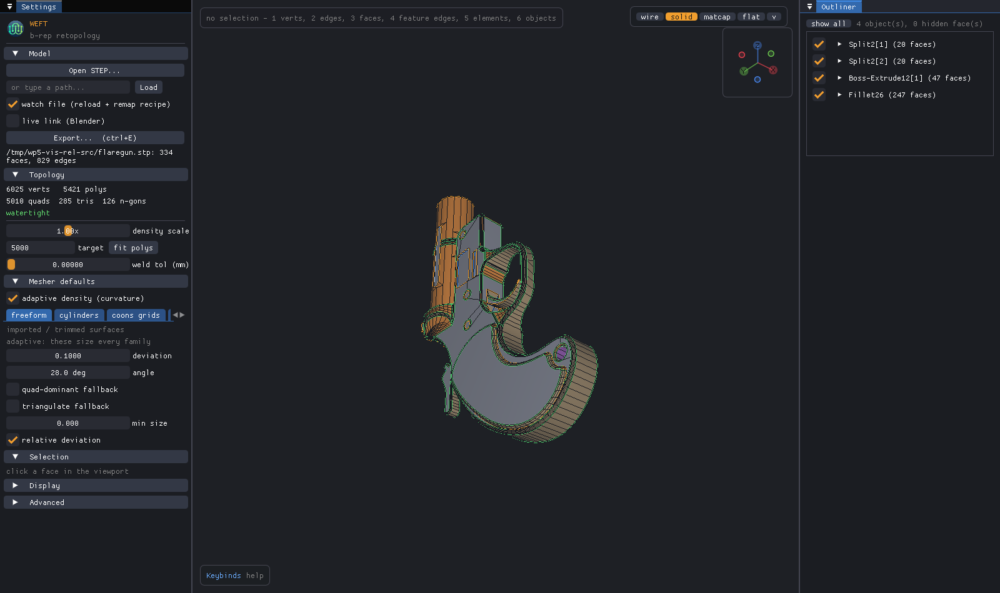
7385 vertices, 6961 polygons (5453 quads, 1266 tris, 242 n-gons) watertight: yes (open edges: 0, non-manifold: 0) degenerate: 5 polygons, 208 slivers (< 5.0 deg)
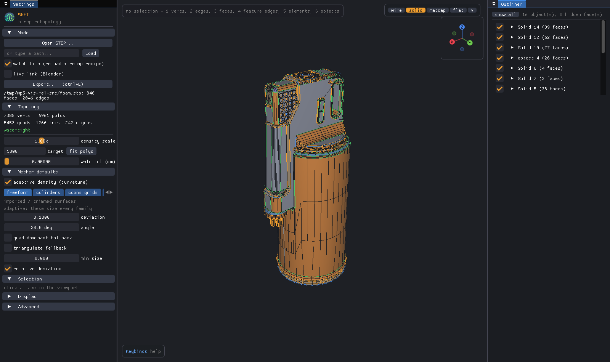
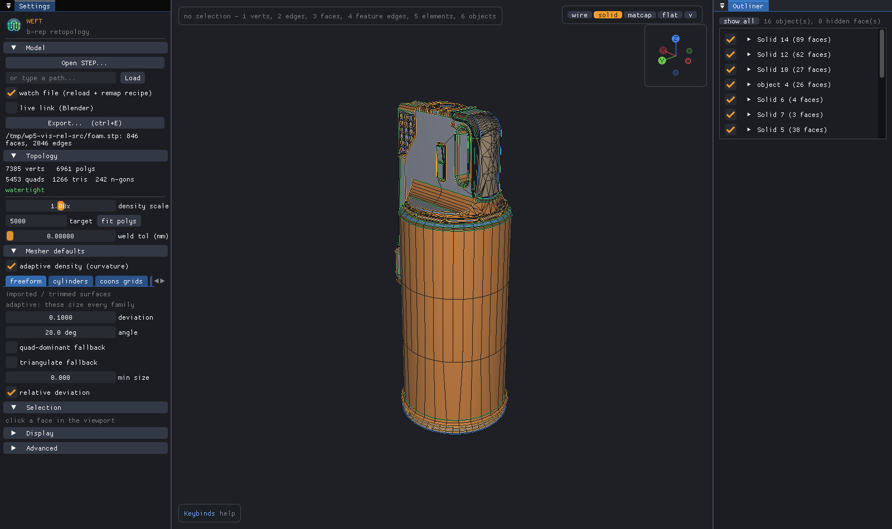
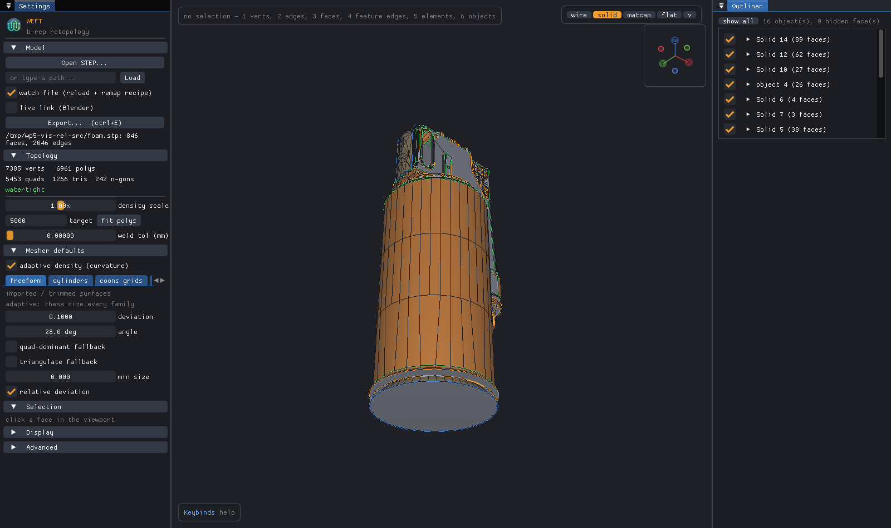
1251 vertices, 1161 polygons (849 quads, 227 tris, 85 n-gons) watertight: yes (open edges: 0, non-manifold: 0) degenerate: 0 polygons, 54 slivers (< 5.0 deg)
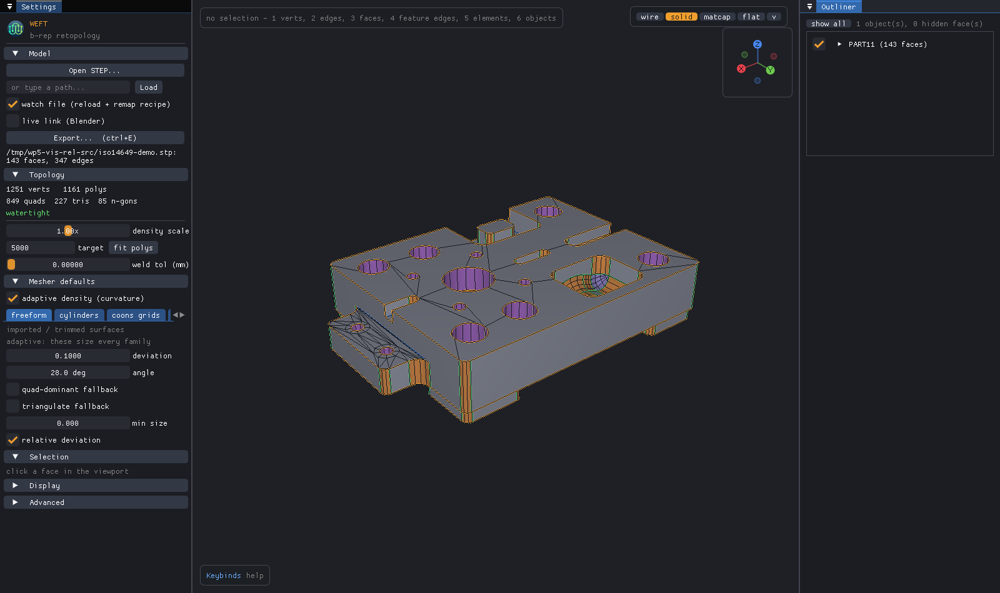
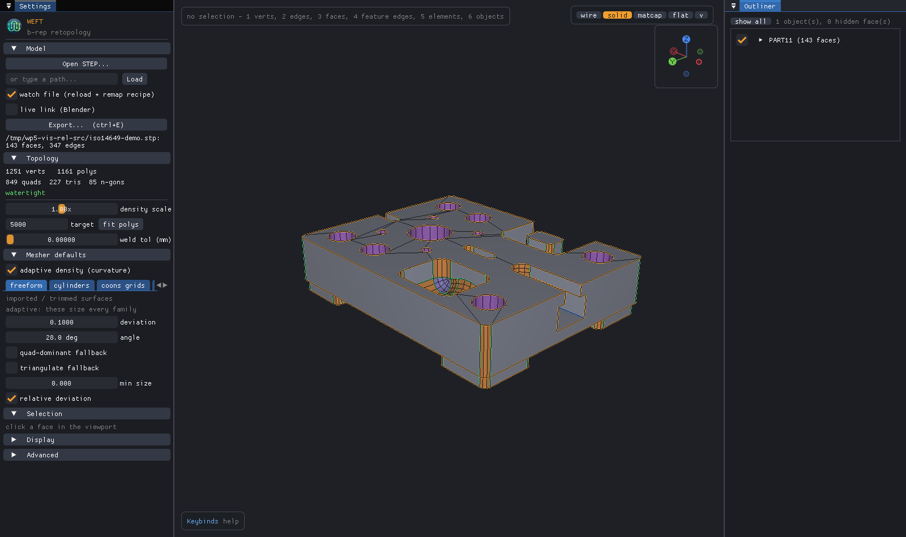
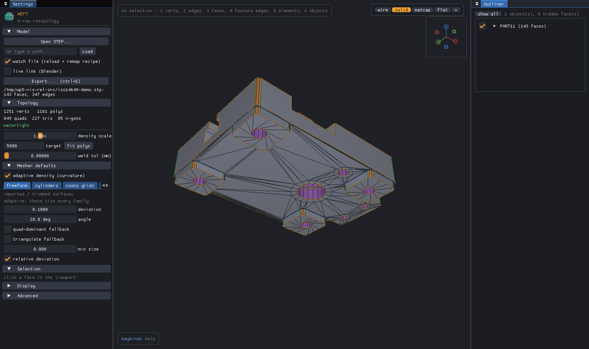
10252 vertices, 10264 polygons (7054 quads, 2754 tris, 456 n-gons) watertight: yes (open edges: 0, non-manifold: 0) degenerate: 1 polygons, 230 slivers (< 5.0 deg)
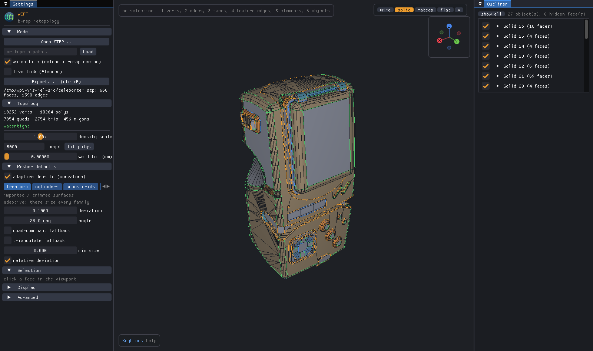
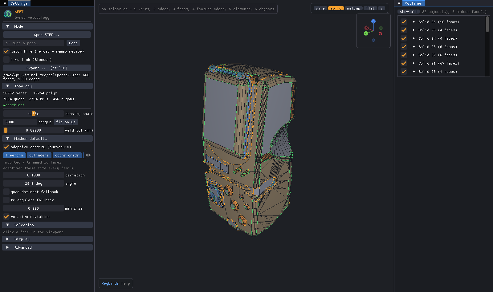
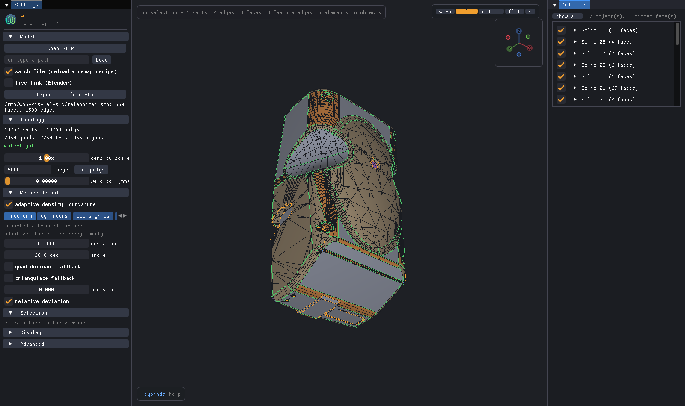